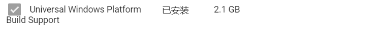
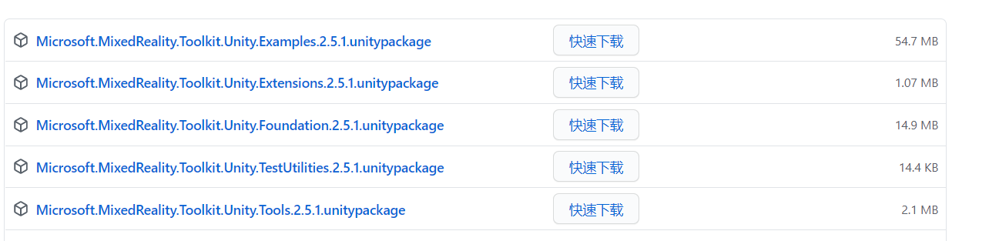
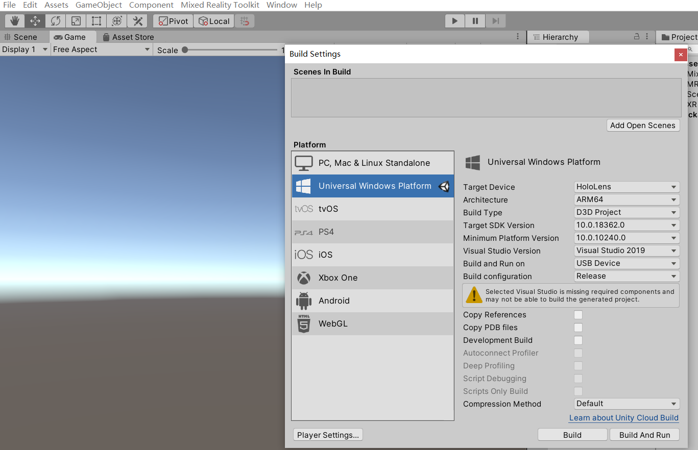
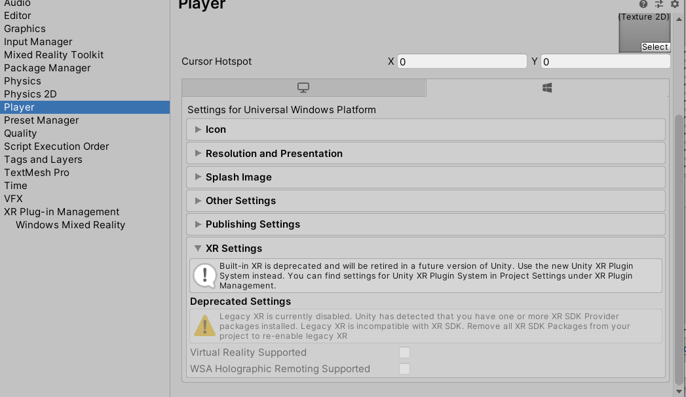
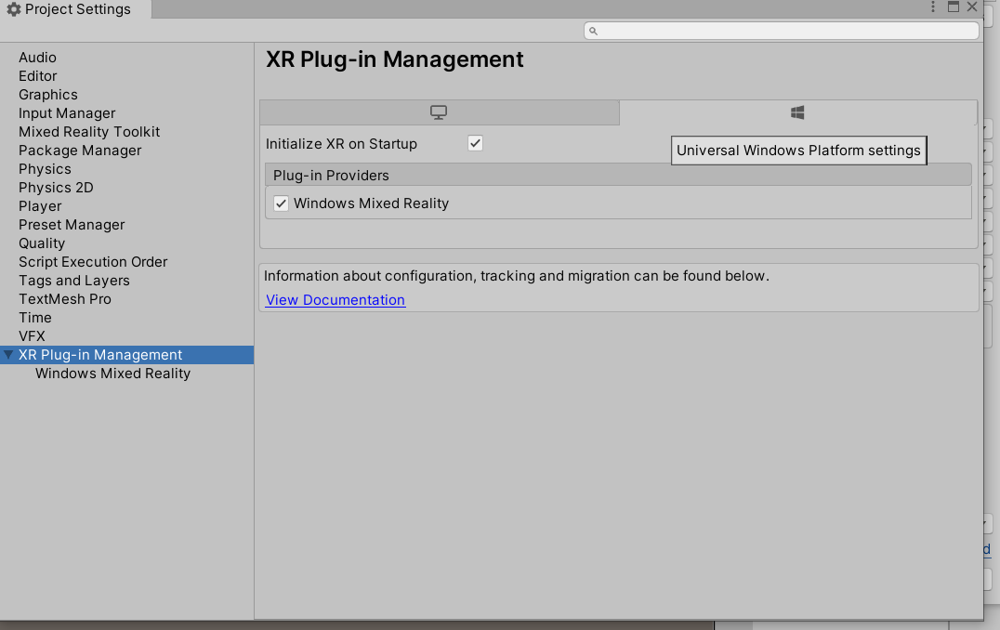
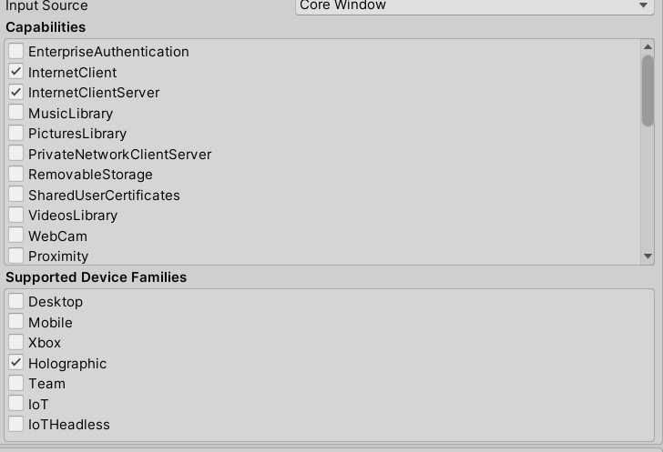
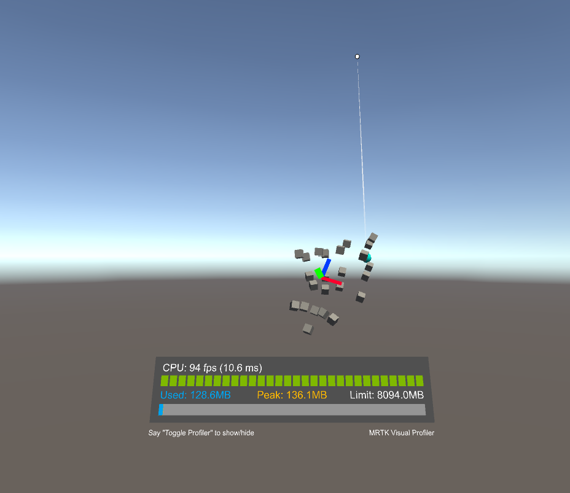

一、HoloLens开发环境的配置
HoloLens2的开发环境需要：
1 | Unity 2018.4.X 及其更高版本，这里推荐长期支持的版本 |
与之相匹配的下载地址:
Unity Hub使用Hub可选择不同的Unity版本进行开发
相应的VS版本可在Unity安装时进行勾选，如果已经通过Unity安装过VS，则不需要重复勾选模块
而如果以前单独安装过VS，需要在VS Installer中再勾选安装Unity开发组件
Windows SDK
SDK下载器的服务器地址不明，如果没有进度，请挂/关梯子。
需要注意的是，进行Hololens开发还需要另外一个模块UWP（Universal Windows Platform），如下图所示

二、下载并且安装MRTK开发包
在MRTK 中下载几个包，
分别为Examples,Extensions,Foundation,Tools由于是Github的源，有可能速度很慢，如果挂梯子后速度仍然不理想，可以安装GitHub加速插件来提速，效果明显，该插件在Chrome插件商店搜索即可，需要科学上网，如果无梯子，自行搜索离线包。

下载完成后，我们在Unity中新建一个项目，如果有多个版本的Unity，需要注意新建项目所属的Unity版本，本测试环境为长期支持的2019.4.1X版本。
新建项目完成后可以导入/直接双击下载的包，需要注意的是安装包的顺序有一定要求，应该是Foundation->Examples->Tools->Extensions,安装期间的对话框均选择Apply。
三、配置构建环境
本教程的意义就在次，由于网络上大部分的配置教程有了一年的历史，开发环境发生了微小的变化，但对于新手来说，如何去解决这些微小的变化是很棘手的。由于unity的20版本无长期支持的版本出现，因此这是最新的稳定版本的配置教程。
1 | 构建环境 |
依次打开File->Bulid Setting->UWP,点击Switch Platform,选择UWP为构建环境，再将几个选项配置
1 | Target Device:HoloLens |

->Player Setting->Player，在新版本中，原有的XR Setting已经被弃用，而使用了更新的XR Plug-in Management,这个选项不再隶属于Player选项，而被独立出来，

->Player Setting->XR Plug-in Management,点选Windows Mixed Reality安装，安装完成后会增加一个子选项WMR，

->Player Setting->Player->publishing Setting->Capabilitles,勾选下列选项
1 | InternetClient |
->Player Setting->Player->publishing Setting->Support Device Families,勾选下列选项
1 | Holographic |

->Player Setting->Player->publishing Setting->packaging->package name 即为打包名，可自行修改
至此，整个环境都搭建完毕了
四、简单测试
Mixed Reality Tools->Add to Scene and Configure
添加完毕后，直接运行现在的场景
在场景中，Shift可生成左手的模型，空格可生成右手的模型，通过鼠标可以生成一个手势的操作，相应的效果应该如下：
